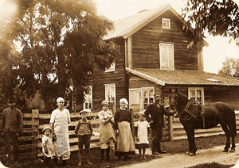
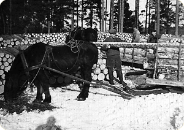

History
This is a short summery of a lecture at the Ansgarii Churh August 5th, 2007.
Per Nirs in Dalkarsbo 400 years
We talk here about a part of Sweden which rose up out of the sea 6000 years ago. The first recorded humans lived in the area at that time that is called the Stone Age. About 3800 years ago this part of Sweden started to use cattle farming. At that time the climate were much warmer, people worshipped the sun and had fertility cults. 1600 years ago the area had a population which left behind findings like grave-fields. 1000 years ago tax payment started just after the Viking area. There is in other words also a pre-history period for this area. But let us start with 1607.
In thirteen generations has the same family lived on the farm Per Nirs in Dalkarsbo. Through a letter from the King dated 23/3 1607 got a man called Lars Persson the right to start up, keep and develop a derelict farm (used as a shieling with summer pasture for some time) in the parish of Hedesunda called Dalkarsbo. He got also six years of freedom from paying tax in order to be able to start up without too many heavy burdens. His children cut up the farm and the other part became what is still called Per Jons.
Dalkarsbo is a relative young village even if we do not know the history of it before 1607. Still today one will still find the two small farms in this village and in total six houses. In addition to these houses there are five summer cottages on the eastern part of the village land in Hällskog. The structure of Dalkarsbo is in principal unchanged since the beginning of 1700. In addition to the two farms their were during the end of the 1900 century one crofter cottage for saltpetre production, one for a soldier and six others plus a third farm called Anders Ers after a split up of Per Nirs.
Hay-making of the wild grass on the near by meadows was a very important part of the winter fodder for the cattle. The meadow is called Somfarmyran and the village had the right to harvest part of this land. Per Nirs had 4 hay-barns used to store hay on the meadows and 10 more on other remote farming lands.
A shielding with summer pasture were started 1692 about five Km South East of the village. Two farms nearby the shielding, Harmyra and Harbäck, understood this summer pasture and the belonging meadow called the Mosquito Bog as a hostile action towards them. It led to 29 years of conflict in various courts, rural and court of appeal.
The Ironworks at Söderfors started 1676 and had during 200 years a high demand of charcoal. This need gave Per Nirs additional income in particular during the winter. This can be a reason why the family stayed on for so many generations and kept the farm.
When the land reform "change of land by law" started 1833 the two farms in the village had a conflict that went on for 52 years, up to 1885. The Ironworks at Söderfors had an interest to take over the neighbour farm Per Jons. They took already the state taxes form this farm and doubled the tax when doing so. This was done to get more income but also to get more forest land in the coming land reform. Through this conflict many documents were copied and saved among others the tax payments for the Dalkarsbo village from 1612 to 1752. That is one of the 110 documents that exist in a chest.
During the 1900 - century reclamation of land to farming land was important for the village. It can be seen that between 1833 and 1882 13 hectares farming land were reclaimed from forest land. The current village road was built 1865 and a shared maintenance plan was established 1887 for the more than 12 km wooden fences on the village land.
During the end of the 1900 century timber and pulp wood transportation during the winter became a new source of income. This went on all the way up to around 1960. In 1893 Per Nirs farm were cut up in two farms between two brothers. Not only the land was divided - 7 houses inclusive of the house for living, the main barn, storage buildings and other buildings were just cut in half and moved. This was possible because all houses were built of timber logs at that time.
In addition to the files in the archive it exists many years of diaries from my grand father Olof Löf. He wrote down in detail every day during 50 years what he worked with and what he purchased. An example is when he built a new cowshed in stone 1914 - 1917:
In addition to his own work he hired labour during 157 working days and he paid SEK 1065 for both the labour and the material used.
This construction work demanded a very strong discipline without not too many holidays. He had in fact only a few days annually when he "did nothing" and sometimes only one day each third year. Sundays were of course a day when he did not work normally. Apart from the visits to the church these days were for planning and business.
Today Per Nirs is back to the same size as before the cut up 1893. The farm is now the home for Arne and Agneta Löf who manage it. Both of them work in the growing service sector. They live with a rich cultures inheritance with maintenance of buildings and the land. They also keep the farm alive by keeping sheep.
Bengt Löf, born at Per Nirs
2007/12/30